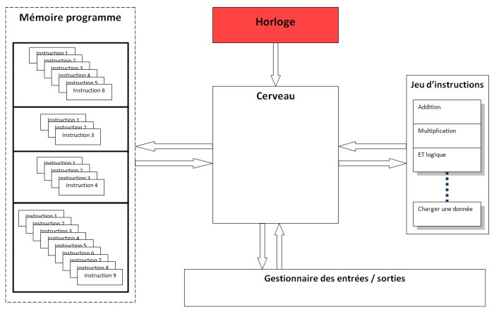

Vous voilà enfin arrivé au moment fatidique où vous allez devoir programmer ! Mais avant cela, je vais vous montrer ce qui va nous servir pour ce chapitre.
En l’occurrence, apprendre à utiliser une
LED
et la référence, présente sur le site
arduino.cc
qui vous sera très utile lorsque vous aurez besoin de faire un programme utilisant une notion qui n’est pas traitée dans ce cours.
Sommaire
La diode électroluminescente
DEL / LED ?
La question n’est pas de savoir quelle abréviation choisir mais plutôt de savoir ce que c’est. Une
DEL
/
LED
:
D
iode
E
lectro-
L
uminescente, ou bien "
L
ight
E
mitting
D
iode" en anglais.
Il s’agit d’un composant électronique qui crée de la lumière quand il est parcouru par un courant électrique.
Je vous en ai faits acheter de différentes couleurs. Vous pouvez, pour ce chapitre, utiliser celle que vous voudrez, cela m’est égal.
 Vous voyez, ci-dessous sur votre droite, la photo d’une DEL de couleur rouge.
La taille n’est pas réelle, sa "tête" (en rouge) ne fait que 5mm de diamètre.
C’est ce composant que nous allons essayer d’allumer avec notre carte Arduino. Mais avant, voyons un peu comment il fonctionne.
Vous voyez, ci-dessous sur votre droite, la photo d’une DEL de couleur rouge.
La taille n’est pas réelle, sa "tête" (en rouge) ne fait que 5mm de diamètre.
C’est ce composant que nous allons essayer d’allumer avec notre carte Arduino. Mais avant, voyons un peu comment il fonctionne.
J’appellerai la diode électroluminescente, tout au long du cours, une LED . Une LED est en fait une diode qui émet de la lumière. Je vais donc vous parler du fonctionnement des diodes en même temps que celui des LED .
Symbole
Sur un schéma électronique, chaque composant est repéré par un symbole qui lui est propre. Celui de la diode est le suivant :
Celui de la LED est :
Il y a donc très peu de différence entre les deux. La LED est simplement une diode qui émet de la lumière, d’où les flèches sur son symbole.
Astuce mnémotechnique
Pour ce souvenir de quel côté est l’anode ou la cathode, voici un moyen mnémotechnique simple et en image
 …
…
| K comme K-thode | A comme A-node |
Fonctionnement
Polarisation directe
On parle de polarisation lorsqu’un composant électronique est utilisé dans un circuit électronique de la "bonne manière". En fait lorsqu’il est polarisé, c’est qu’on l’utilise de la façon souhaitée. Pour polariser la diode, on doit faire en sorte que le courant la parcours de l’anode vers la cathode. Autrement dit, la tension doit être plus élevée à l’anode qu’à la cathode.
Polarisation inverse
La polarisation inverse d’une diode est l’opposé de la polarisation directe. Pour créer ce type de montage, il suffit simplement, dans notre cas, de "retourner" la diode enfin la brancher "à l’envers". Dans ce cas, le courant ne passe pas.
Note : une diode polarisée en inverse ne grillera pas si elle est utilisée dans de bonnes conditions. En fait, elle fonctionne de "la même façon" pour le courant positif et négatif.
Utilisation
Si vous ne voulez pas faire partir votre première diode en fumée, je vous conseille de lire les prochaines lignes attentivement :P
En électronique, deux paramètres sont à prendre en compte : le courant et la tension. Pour une diode, deux tensions sont importantes. Il s’agit de la tension maximum en polarisation directe, et la tension maximum en polarisation inverse. Ensuite, pour un bon fonctionnement des LED , le courant a lui aussi son importance.
La tension maximum directe
Lorsque l’on utilise un composant, on doit prendre l’habitude d’utiliser la "datasheet" ("documentation technique" en anglais) qui nous donne toutes les caractéristiques sur le composant. Dans cette datasheet, on retrouvera quelque chose appelé "Forward Voltage", pour la diode. Cette indication représente la chute de tension aux bornes de la diode lorsque du courant la traverse en sens direct. Pour une diode classique (type 1N4148 ), cette tension sera d’environ 1V. Pour une LED , on considérera plutôt une tension de 1,2 à 1,6V.
Bon, pour faire nos petits montages, on ne va pas chipoter, mais c’est la démarche à faire lorsque l’on conçoit un schéma électrique et que l’on dimensionne ses composants.
La tension maximum inverse
Cette tension représente la différence maximum admissible entre l’anode et la cathode lorsque celle-ci est branchée "à l’envers". En effet, si vous mettez une tension trop importante à ces bornes, la jonction ne pourra pas le supporter et partira en fumée. En anglais, on retrouve cette tension sous le nom de "Reverse Voltage" (ou même "Breakdown Voltage"). Si l’on reprend la diode 1N4148, elle sera comprise entre 75 et 100V. Au-delà de cette tension, la jonction casse et la diode devient inutilisable. Dans ce cas, la diode devient soit un court-circuit, soit un circuit ouvert. Parfois cela peu causer des dommages importants dans nos appareils électroniques ! Quoi qu’il en soit, on ne manipulera jamais du 75V ! :P
Le courant de passage
Le courant qui traverse une LED a son importance. Si l’on branche directement la LED sur une pile, elle va s’allumer, puis tôt ou tard finira par s’éteindre… définitivement. En effet, si on ne limite pas le courant traversant la LED , elle prendra le courant maximum, et ça c’est pas bon car ce n’est pas le courant maximum qu’elle peut supporter. Pour limiter le courant, on place une résistance avant (ou après) la LED . Cette résistance, savamment calculée, lui permettra d’assurer un fonctionnement optimal.
Mais comment on la calcule cette résistance ?
Simplement avec la formule de base, la loi d’Ohm.
Petit rappel:
Dans le cas d’une LED , on considère, en général, que l’intensité la traversant doit être de 20 mA. Si on veut être rigoureux, il faut aller chercher cette valeur dans le datasheet. On a donc . Ensuite, on prendra pour l’exemple une tension d’alimentation de 5V (en sortie de l’Arduino, par exemple) et une tension aux bornes de la LED de 1,2V en fonctionnement normal. On peut donc calculer la tension qui sera aux bornes de la résistance : . Enfin, on peut calculer la valeur de la résistance à utiliser :
R = \frac{U}{I} \\\\
R = \frac{3,8}{0,02}\\\
R = 190\Omega
Et voilà, vous connaissez la valeur de la résistance à utiliser pour être sûr de ne pas griller des
LED
à tour de bras.
À votre avis, vaut-il mieux utiliser une résistance de plus forte valeur ou de plus faible valeur ?
Réponse :
Si on veut être sûr de ne pas détériorer la LED à cause d’un courant trop fort, on doit placer une résistance dont la valeur est plus grande que celle calculée. Autrement, la diode recevra le courant maximal pouvant la traverser.
Par quoi on commence ?
Le but
Le but de ce premier programme est… de vous faire programmer ! :P Non, je ne rigole pas ! Car c’est en pratiquant la programmation que l’on retient le mieux les commandes utilisées. De plus, en faisant des erreurs, vous vous forgerez de bonnes bases qui vous seront très utiles ensuite, lorsqu’il s’agira de gagner du temps. Mais avant tout, c’est aussi parce que ce tuto est centré sur la programmation que l’on va programmer !
Objectif
L’objectif de ce premier programme va consister à allumer une
LED
. C’est nul me direz vous.
J’en conviens. Cependant, vous verrez que ce n’est pas très simple.
Bien entendu, je n’allais pas créer un chapitre entier dont le but ultime aurait été d’allumer une
LED
!
Non. Alors j’ai prévu de vous montrer deux trois trucs qui pourront vous aider dès lors que vous voudrez sortir du nid et prendre votre envol vers de nouveaux cieux !
Matériel
Pour pouvoir programmer, il vous faut, bien évidemment, une carte Arduino et un câble USB pour relier la carte au PC. Mais pour voir le résultat de votre programme, vous aurez besoin d’éléments supplémentaires. Notamment, une LED et une résistance.
Un outil formidable : la breadboard !
Je vais maintenant vous présenter un outil très pratique lorsque l’on fait ses débuts en électronique ou lorsque l’on veut tester rapidement/facilement un montage. Cet accessoire s’appelle une breadboard (littéralement : planche à pain, techniquement : plaque d’essai sans soudure). Pour faire simple, c’est une plaque pleine de trous !
Principe de la breadboard
Certes la plaque est pleine de trous, mais pas de manière innocente ! En effet, la plupart d’entre eux sont reliés. Voici un petit schéma rapide qui va aider à la compréhension.
Comme vous pouvez le voir sur l’image, j’ai dessiné des zones. Les zones rouges et noires correspondent à l’alimentation. Souvent, on retrouve deux lignes comme celles-ci permettant de relier ses composants aux alimentations nécessaires. Par convention, le noir représente la masse et le rouge est l’alimentation (+5V, +12V, -5V… ce que vous voulez y amener). Habituellement tous les trous d’une même ligne sont reliés sur cette zone. Ainsi, vous avez une ligne d’alimentation parcourant tout le long de la carte. Ensuite, on peut voir des zones en bleu. Ces zones sont reliées entre elles par colonne . Ainsi, tous les trous sur une même colonne sont reliés entre eux. En revanche, chaque colonne est distincte. En faisant chevaucher des composants sur plusieurs colonnes vous pouvez les connecter entre eux. Dernier point, vous pouvez remarquer un espace coupant la carte en deux de manière symétrique. Cet espace coupe aussi la liaison des colonnes. Ainsi, sur le dessin ci-dessus on peut voir que chaque colonne possède cinq trous reliés entre eux. Cet espace au milieu est normalisé et doit faire la largeur des circuits intégrés standards. En posant un circuit intégré à cheval au milieu, chaque patte de ce dernier se retrouve donc sur une colonne, isolée de la précédente et de la suivante.
Si vous voulez voir plus concrètement ce fonctionnement, je vous conseille d’essayer le logiciel Fritzing , qui permet de faire des circuits de manière assez simple et intuitive. Vous verrez ainsi comment les colonnes sont séparées les unes des autres. De plus, ce logiciel sera utilisé pour le reste du tuto pour les captures d’écrans des schémas électroniques.
Réalisation
Avec le brochage de la carte Arduino, vous devrez connecter la plus grande patte au +5V (broche
5V
).
La plus petite patte étant reliée à la résistance, elle-même reliée à la broche numéro 2 de la carte.
Tout ceci a une importance.
En effet, on pourrait faire le contraire, brancher la
LED
vers la masse et l’allumer en fournissant le 5V depuis la broche de signal.
Cependant, les composants comme les microcontrôleurs n’aiment pas trop délivrer du courant, ils préfèrent l’absorber.
Pour cela, on préférera donc alimenter la
LED
en la placant au +5V et en mettant la broche de Arduino à la masse pour faire passer le courant.
Si on met la broche à 5V, dans ce cas le potentiel est le même de chaque côté de la
LED
et elle ne s’allume pas !
Ce n’est pas plus compliqué que ça !
Schéma de la réalisation (un exemple de branchement sans breadboard et deux exemples avec) :
Créer un nouveau projet
Pour pouvoir programmer notre carte, il faut que l’on créer un nouveau programme. Ouvrez votre logiciel Arduino. Allez dans le menu File et choisissez l’option Save as… :
Vous arrivez dans cette nouvelle fenêtre :
Tapez le nom du programme, dans mon cas, je l’ai appelé test_1 . Enregistrez. Vous arrivez dans votre nouveau programme, qui est vide pour l’instant, et dont le nom s’affiche en Haut de la fenêtre et dans un petit onglet :
Le code minimal
Pour commencer le programme, il nous faut un code minimal. Ce code va nous permettre d’initialiser la carte et va servir à écrire notre propre programme. Ce code, le voici :
// fonction d'initialisation de la carte
void setup()
{
// contenu de l'initialisation
}
// fonction principale, elle se répète (s’exécute) à l'infini
void loop()
{
// contenu de votre programme
}
Créer le programme : les bons outils !
La référence Arduino
Qu’est ce que c’est ?
L’Arduino étant un projet dont la communauté est très active, nous offre sur son site internet une référence . Mais qu’est ce que c’est ? Eh bien il s’agit simplement de "la notice d’utilisation" du langage Arduino. Plus exactement, une page internet de leur site est dédiée au référencement de chaque code que l’on peut utiliser pour faire un programme.
Comment l’utiliser ?
Pour l’utiliser, il suffit d’aller sur la page de leur site , malheureusement en anglais, mais dont il existe une traduction pas tout à fait complète sur le site Français Arduino. Ce que l’on voit en arrivant sur la page : trois colonnes avec chacune un type d’éléments qui forment les langages Arduino.
- Structure : cette colonne référence les éléments de la structure du langage Arduino. On y retrouve les conditions, les opérations, etc.
- Variables : comme son nom l’indique, elle regroupe les différents types de variables utilisables, ainsi que certaines opérations particulières
- Functions : ici c’est tout le reste, mais surtout les fonctions de lecture/écriture des broches du microcontrôleur (ainsi que d’autres fonctions bien utiles)
Il est très important de savoir utiliser la documentation que nous offre Arduino !
Car en sachant cela, vous pourrez faire des programmes sans avoir appris préalablement à utiliser telle fonction ou telle autre. Vous pourrez devenir les maitres du monde !!!
Euh, non, je crois pas en fait…

Allumer notre LED
1ère étape
Il faut avant tout définir les broches du micro-contrôleur. Cette étape constitue elle-même deux sous étapes. La première étant de créer une variable définissant la broche utilisée, ensuite, définir si la broche utilisée doit être une entrée du micro-contrôleur ou une sortie. Premièrement, donc, définissons la broche utilisée du microcontrôleur :
const int led_rouge = 2; // définition de la broche 2 de la carte en tant que variable
Le terme
const
signifie que l’on définit la variable comme étant constante.
Par conséquent, on change la nature de la variable qui devient alors constante et sa valeur ne pourra jamais être changée.
Le terme
int
correspond à un type de variable.
En définissant une variable de ce type, elle peut stocker un nombre allant de -2147483648 à +2147483647 !
Cela nous suffit amplement !
Nous sommes donc en présence d’une variable, nommée
led_rouge
, qui est en fait une constante, qui peut prendre une valeur allant de -2147483648 à +2147483647.
Dans notre cas, cette variable, pardon constante, est assignée à 2. Le chiffre 2.
Lorsque votre code sera compilé, le micro-contrôleur saura ainsi que sur sa broche numéro 2, il y a un élément connecté.
Bon, cela ne suffit pas de définir la broche utilisée.
Il faut maintenant dire si cette broche est une
entrée
ou une
sortie
.
Oui, car le micro-contrôleur a la capacité d’utiliser certaines de ses broches en entrée ou en sortie.
C’est fabuleux ! En effet, il suffit simplement d’interchanger UNE ligne de code pour dire qu’il faut utiliser une broche en entrée (récupération de données) ou en sortie (envoi de données).
Cette ligne de code justement, parlons-en !
Elle doit se trouver dans la fonction
setup()
.
Dans la référence, ce dont nous avons besoin se trouve dans la catégorie
Functions
, puis dans
Digital I/O
.
I/O pour Input/Output, ce qui signifie dans la langue de Molière : Entrée/Sortie.
La fonction se trouve être
pinMode()
. Pour utiliser cette fonction, il faut lui envoyer deux paramètres :
- Le nom de la variable que l’on a défini à la broche
- Le type de broche que cela va être (entrée ou sortie)
// fonction d'initialisation de la carte
void setup()
{
// initialisation de la broche 2 comme étant une sortie
pinMode(led_rouge, OUTPUT);
}
Ce code va donc définir la led_rouge (qui est la broche numéro 2 du micro-contrôleur) en sortie, car
OUTPUT
signifie en français :
sortie
.
Maintenant, tout est prêt pour créer notre programme. Voici le code quasiment complet :
// définition de la broche 2 de la carte en tant que variable
const int led_rouge = 2;
// fonction d'initialisation de la carte
void setup()
{
// initialisation de la broche 2 comme étant une sortie
pinMode(led_rouge, OUTPUT);
}
// fonction principale, elle se répète (s’exécute) à l'infini
void loop()
{
// contenu de votre programme
}
2e étape
Cette deuxième étape consiste à créer le contenu de notre programme.
Celui qui va aller remplacer le commentaire dans la fonction
loop()
, pour réaliser notre objectif : allumer la
LED
!
Là encore, on ne claque pas des doigts pour avoir le programme tout prêt ! :P
Il faut retourner chercher dans la référence Arduino ce dont on a besoin.
Oui, mais là, on ne sait pas ce que l’on veut ?
On cherche une fonction qui va nous permettre d’allumer cette
LED
.
Il faut donc que l’on se débrouille pour la trouver.
Et avec notre niveau d’anglais, on va facilement trouver. Soyons un peu logique, si vous le voulez bien.
Nous savons que c’est une fonction qu’il nous faut (je l’ai dit il y a un instant), on regarde donc dans la catégorie
Functions
de la référence.
Si on garde notre esprit logique, on va s’occuper d’allumer une
LED
, donc de dire quel est l’état de sortie de la broche numéro 2 où laquelle est connectée notre
LED
.
Donc, il est fort à parier que cela se trouve dans
Digital I/O
.
Tiens, il y a une fonction suspecte qui se prénomme
digitalWrite()
.
En français, cela signifie "écriture numérique".
C’est donc l’écriture d’un état logique (0 ou 1).
Quelle se trouve être la première phrase dans la description de cette fonction ?
Celle-ci : "Write a HIGH or a LOW value to a digital pin".
D’après notre niveau bilingue, on peut traduire par :
Ecriture d’une valeur HAUTE ou une valeur BASSE sur une sortie numérique
.
Bingo ! C’est ce que l’on recherchait ! Il faut dire que je vous ai un peu aidé.
Ça signifie quoi "valeur HAUTE ou valeur BASSE" ?
En électronique numérique, un niveau haut correspondra à une tension de +5V et un niveau dit bas sera une tension de 0V (généralement la masse).
Sauf qu’on a connecté la
LED
au pôle positif de l’alimentation, donc pour qu’elle s’allume, il faut qu’elle soit reliée au 0V.
Par conséquent, on doit mettre un état bas sur la broche du microcontrôleur.
Ainsi, la différence de potentiel aux bornes de la
LED
permettra à celle-ci de s’allumer.
Voyons un peu le fonctionnement de
digitalWrite()
en regardant dans sa syntaxe.
Elle requiert deux paramètres. Le nom de la broche que l’on veut mettre à un état logique et la valeur de cet état logique. Nous allons donc écrire le code qui suit, d’après cette syntaxe :
digitalWrite(led_rouge, LOW); // écriture en sortie (broche 2) d'un état BAS
Si on teste le code entier :
// définition de la broche 2 de la carte en tant que variable
const int led_rouge = 2;
// fonction d'initialisation de la carte
void setup()
{
// initialisation de la broche 2 comme étant une sortie
pinMode(led_rouge, OUTPUT);
}
// fonction principale, elle se répète (s’exécute) à l'infini
void loop()
{
// écriture en sortie (broche 2) d'un état BAS
digitalWrite(led_rouge, LOW);
}
On voit s’éclairer la LED !!! C’est fantastique !
Comment tout cela fonctionne ?
Et comment ça se passe à l’intérieur ?? Je comprends pas comment le microcontrôleur fait pour tout comprendre et tout faire. Je sais qu’il utilise les 0 et les 1 du programme qu’on lui a envoyé, mais comment il sait qu’il doit aller chercher le programme, le lire, l’exécuter, etc. ?
Eh bien, eh bien ! En voilà des questions ! Je vais essayer d’y répondre simplement, sans entrer dans le détail qui est quand même très compliqué. Bon, si vous êtes prêt, c’est parti ! D’abord, tout se passe dans le cerveau du microcontrôleur…
Le démarrage
Un peu comme vous démarreriez un ordinateur, la carte Arduino aussi démarre. Alors c’est un peu transparent parce qu’elle démarre dans deux cas principaux : le premier c’est lorsque vous la branchez sur le port USB ou une sur autre source d’alimentation ; le deuxième c’est lorsque le compilateur a fini de charger le programme dans la carte, il la redémarre. Et au démarrage de la carte, il se passe des trucs.
Chargez !
Vous vous souvenez du chapitre où je vous présentais un peu le fonctionnement global de la carte ? Oui, celui-là . Je vous parlais alors de l’exécution du programme. Au démarrage, la carte (après un petit temps de vérification pour voir si le compilateur ne lui charge pas un nouveau programme) commence par aller charger les variables en mémoire de données. C’est un petit mécanisme électronique qui va simplement faire en sorte de copier les variables inscrites dans le programme vers la mémoire de données. En l’occurrence, dans le programme que l’on vient de créer, il n’y a qu’une variable et elle est constante en plus. Ce ne sera donc pas bien long à mettre ça en mémoire ! Ensuite, vient la lecture du programme. Et là, que peut-il bien se passer à l’intérieur du microcontrôleur ? En fait, ce n’est pas très compliqué (sur le principe :P ).
La vraie forme du programme
À présent, le cerveau du microcontrôleur va aller lire la première instruction du programme, celle qui se trouve dans la fonction
setup()
.
Sauf que, l’instruction n’est plus sous la même forme.
Non, cette fois-ci je ne parle pas des 0 et des 1, mais bien d’une transformation de l’instruction.
C’est le compilateur qui a découpé chaque instruction du programme en plusieurs petites instructions beaucoup plus simples.
Et pourquoi cela ? Le microcontrôleur ne sais pas faire une instruction aussi simple que de déclarer une broche en sortie ou allumer une LED ?
Oui. C’est pourquoi il a besoin que le programme soit non plus sous forme de "grandes instructions" comme on l’a écrit, mais bien sous forme de plusieurs petites instructions. Et cela est dû au fait qu’il ne sait exécuter que des instructions très simples !
Bien entendu, il n’y a pas de limite à six instructions, il peut y en avoir beaucoup plus ou beaucoup moins ! Donc, en mémoire de programme, là où le programme de la carte est stocké, on va avoir plutôt quelque chose qui ressemble à ça :
Chaque grande instruction est découpée en petites instructions par le compilateur et est ensuite stockée dans la mémoire de programme. Pour être encore plus détaillé, chaque instruction agit sur un registre . Un registre, c’est la forme la plus simplifiée de la mémoire en terme de programmation. On en trouve plusieurs, par exemple le registre des timers ou celui des entrées/sorties du port A (ou B, ou C) ou encore des registres généraux pour manipuler les variables. Par exemple, pour additionner 3 à la variable 'a' le microcontrôleur fera les opérations suivantes :
- chargement de la variable 'a' dans le registre général 8 (par exemple) depuis la RAM
- chargement de la valeur 3 dans le registre général 9
- mise du résultat de "registre 8 + registre 9" dans le registre 8
- changement de la valeur de 'a' en RAM depuis le registre 8
Et l’exécution du programme
À présent que l’on a plein de petites instructions, qu’avons nous de plus ? Pas grand chose me direz-vous.
Le Schmilblick n’a guère avancé…
Pour comprendre, il faut savoir que le microcontrôleur ne sais faire que quelques instructions.
Ces instructions sont encore plus simple que d’allumer une
LED
!
Il peut par exemple faire des opérations logiques (ET, OU, NON, décalage de bits, …), des opérations numériques (addition et soustraction, les multiplications et divisions sont faites avec des opérations du types décalage de bits) ou encore copier et stocker des données.
Il sait en faire, donc, mais pas tant que ça. Tout ce qu’il sait faire est régi par son
jeu d’instructions
.
C’est-à-dire qu’il a une liste des instructions possibles qu’il sait exécuter et il s’y tient.
Le compilateur doit donc absolument découper chaque instruction du programme en instructions que le microcontrôleur sait exécuter.
Le cerveau du microcontrôleur va aller lire le programme, il compare ensuite chaque instruction à son registre d’instructions et les exécute. Pour allumer une LED , il fera peut-être un ET logique, chargera une donnée, fera une soustraction, … on ne sait pas mais il va y arriver. Et pour terminer, il communiquera à son gestionnaire d’entrées/sortie pour lui informer qu’il faut activer tel transistor interne pour mettre une tension sur telle broche de la carte pour ainsi allumer la LED qui y est connectée.
Waoou ! Et ça va vite tout ça ?
Extrêmement vite ! Cela dit, tout dépend de sa vitesse d’exécution…
La vitesse d’exécution
Le microcontrôleur est capable de faire un très grand nombre d’opérations par seconde. Ce nombre est défini par sa vitesse, entre autre. Sur la carte Arduino Duemilanove ou Uno, il y a un composant, que l’on appel un quartz , qui va définir à quelle vitesse va aller le microcontrôleur. Ce quartz permet de cadencer le microcontrôleur. C’est en fait une horloge qui permet au microcontrôleur de se repérer. À chaque top de l’horloge, le microcontrôleur va faire quelque chose. Ce quelque chose peut, par exemple, être l’exécution d’une instruction, ou une lecture en mémoire. Cependant, chaque action ne dure pas qu’un seul top d’horloge. Suivant l’action réalisée, cela peut prendre plus ou moins de temps (de nombre de "coups d’horloge").

La carte Arduino atteint au moins le million d’instructions par seconde ! Cela peut paraître énorme, mais comme je le disais, si il y a des instructions qui prennent beaucoup de temps, eh bien il se peut qu’elle n’exécute qu’une centaine d’instructions en une seconde. Tout dépend du temps pris par une instruction à être exécutée. Certaines opérations sont aussi parallélisées. Par exemple, le microcontrôleur peut faire une addition d’un côté pour une variable et en même temps il va mesurer le nombre de coups d’horloge pour faire s’incrémenter un compteur pour gérer un timer. Ces opérations sont réellement faites en parallèle, ce n’est pas un faux multi-tâche comme sur un ordinateur. Ici les deux registres travaillent en même temps. Le nombre de la fin ? 62.5 nanosecondes. C’est le temps qu’il faut au microcontrôleur d’Arduino pour faire une instruction la plus simple possible (en prenant en compte l’Arduino Uno et son quartz à 16MHz).
À présent, vous savez utiliser les sorties du micro-contrôleur, nous allons donc pouvoir passer aux choses sérieuses et faire clignoter notre LED !

{kind=link}